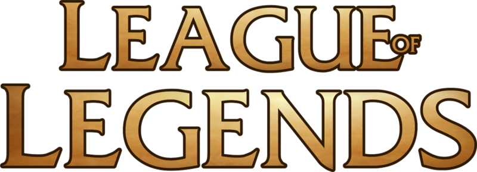

League of Legends is a popular multiplayer online battle arena(MOBA) video game, where a player assumes the role of a summoner. This summoner controls a certain champion which possessess a set of unique abilities, and battle against a team of other players. The game has two teams of five champions face off against each other, where the goal is to destroy the opposing team's Nexus, a structure in the center of each base. To achieve this goal, players can kill minions(neutral monsters) or enemy players to earn gold to buy items to power up their champions.
The game also contains a mastery system to display proficiency on champions. Every game that a player uses a champion, they gain mastery points for that champion based on their game performance and outcome. Based on the mastery points, they are given a certain mastery status for that champion from Mastery 1 to Mastery 7, with the icons shown below reprsenting the masteries from 1 to 7.
This application allows you to view the mastery rank, mastery points, and percent progress to the next tier. Additionally, you can also view your information regarding your summoner status, such as currently selected summoner icon and summoner level.